Professional Traders vs Retail Traders 101
What a professional trader actually is and does, and why the retail approach destroys capital
A professional trader is a full-time trader at an investment bank or a hedge fund; the strategy worth emulating is the long/short, 1-3 month, absolute-return portfolio that pre-Volcker prop desks and hedge fund PMs run, not day trading.
The gist
- The framework's goal: let retail traders emulate consistently profitable professional traders in their own retail brokerage accounts, on a weekly basis that fits normal life.
- A Professional Trader is a full-time trader working at either an Investment Bank or a Hedge Fund. Everything follows from that definition.
- Post-Volcker, an IB trader mostly runs a commission (market-making) business and trades negative-selection positions they do not want; the part worth emulating is the pre-Volcker PROPRIETARY function: long/short portfolios, 1-3 month horizon.
- A Hedge Fund PM runs long/short portfolios in positions they DO want (positive selection), aiming to make money in both rising and falling markets (Absolute Return).
- Professionals are paid a basic salary regardless of performance, add to the account when winning and reduce risk when losing; retail traders take income when winning and seek risk when losing, so the account only trends to zero.
- You climb the Competency Hierarchy from Unconscious Incompetence (retail) to Unconscious Competence (professional) through Education and Implementation.
The objective of the framework
- Provide a framework that lets Retail Traders emulate consistently profitable Professional Traders and benefit from the same approach.
- The framework must let retail traders use the same approach as consistently profitable professionals, inside their own Retail Brokerage accounts.
- It must be implementable on a weekly basis and realistically fit into a normal everyday life.
The whole course is built to make a retail trader do what a professional does, but on a part-time, weekly cadence rather than a full-time trading floor schedule.
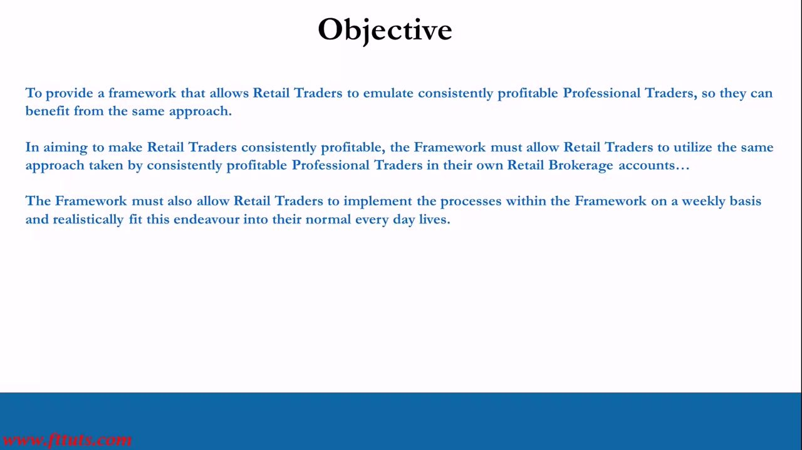
Understanding the landscape
- Retail traders globally misunderstand what a professional trader actually is and does.
- You are joining a very mature, sophisticated industry full of extremely intelligent, hungry and ruthless individuals, teams and organizations.
- The idea that reading a $20 technical-analysis book lets you day trade for consistent income is, from a pro's view, laughable; if you were told this is normal and realistic, you were lied to.
- The vast majority of retail traders seeking regular short-term gains (like day traders) blow up.
Before emulating professionals you must define what one actually is; only then can you climb the Competency Hierarchy through Education and Implementation.
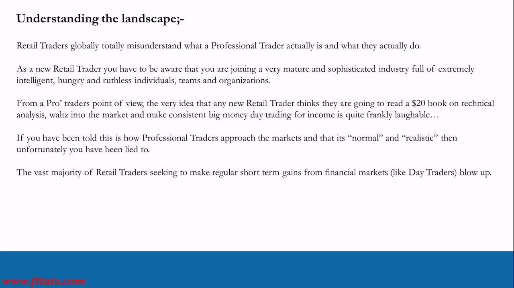
The Competency Hierarchy
- Four steps of learning as a pyramid, bottom to top: Unconscious Incompetence -> Conscious Incompetence -> Conscious Competence -> Unconscious Competence.
- Unconscious Incompetence (red): no clue what you're doing but you think you do (delusion / denial / lies) -> RETAIL TRADERS.
- Conscious Incompetence (orange): you now know you're doing it wrong and have the right information to enable learning.
- Conscious Competence (yellow): you know how to do it right but need real-world practice and possibly mentoring -> INSTITUTE TRADERS (the middle transition).
- Unconscious Competence (green): you do it right and make money without thinking about it too much -> PROFESSIONAL TRADERS.
- You move up the hierarchy through Education and Implementation.
Retail traders start at the bottom (Unconscious Incompetence); professionals operate at the top (Unconscious Competence). This course gets you to the door of Conscious Competence; stepping into Unconscious Competence is up to you or a mentoring program.
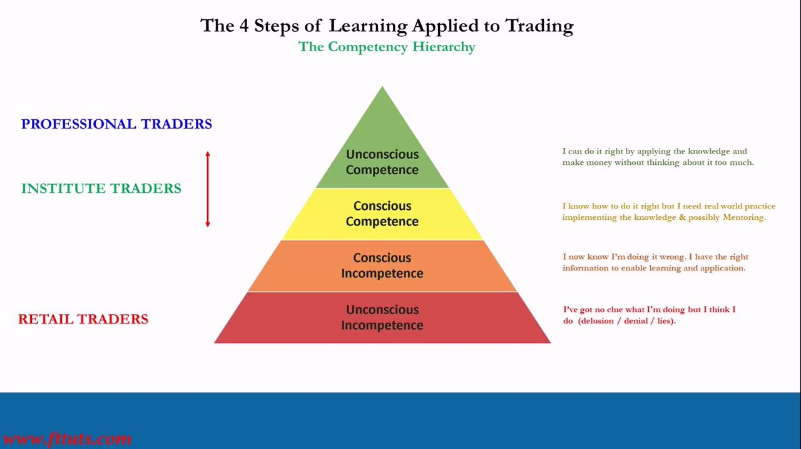
What is a Professional Trader?
- DEFINITION: A Professional Trader is a full-time trader that works at either an Investment Bank or a Hedge Fund.
- Four questions must be answered: (1) What does an IB professional trader actually do? (2) What does a Hedge Fund professional trader do? (3) What does this mean for retail traders? (4) What are the differences between professional and retail traders?
These four questions give the foundation to build on and to climb the Competency Hierarchy.
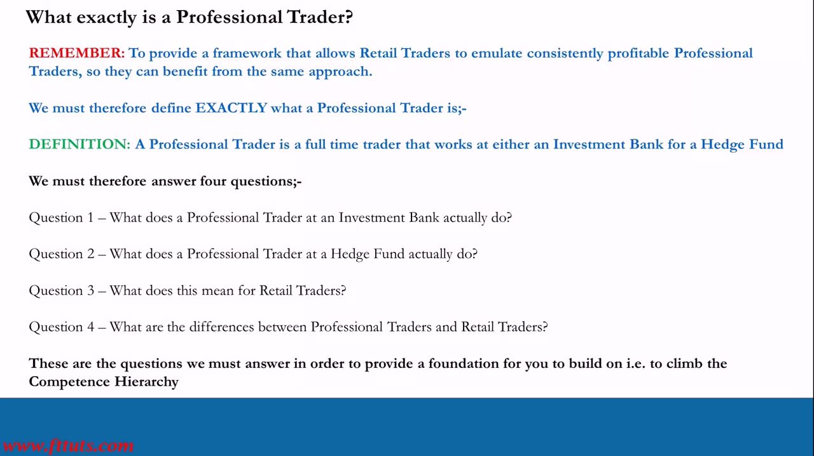
The IB trader: market making (agency and risk)
- The Volcker Rule was designed in 2010, slowly implemented, and compulsory in 2015; banks unwound their dependence on proprietary trading.
- Market Making is the IB trader's bread-and-butter business, split into two categories: Agency Business (not on risk to the client) and Risk Business (on risk to the client).
- A commission is charged on all market-making business, typically ~3 basis points (0.03%). 1% = 100 bps, so 1 bp = 0.01%.
- Agency business is typically ~80% of all market-making business.
- Example: buy $10,000,000 of Apple at $120.00/share = 83,333 AAPL; commission = $10,000,000 x 0.0003 = $3,000. This is risk-free to the bank and executed by algorithm per the client's instructions.
Agency execution is risk-free fee income; risk business puts the bank's own capital on the line when it fills the client from its own book.
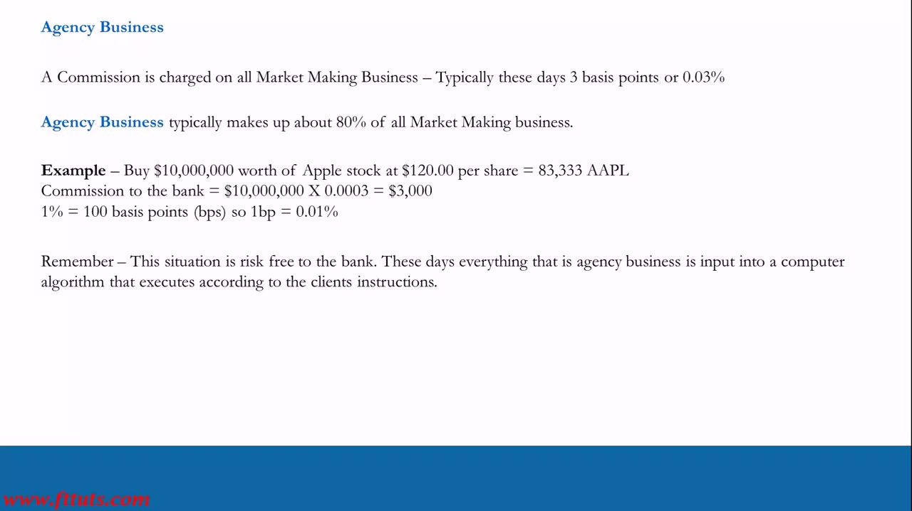
Risk business and negative-selection portfolios
- A market maker's ability is measured by the % of Commission Retained (Retention Ratio): 100% in the positive example, -100% in the negative example; over tens of thousands of trades a year, a 70% retention rate is normal.
- Most risk is now handled by the same algorithms used for agency business (making prices every 15-30 minutes, holding many positions).
- These are Negative Selection Portfolios: positions the trader does not want and has no view on, simply processing customer risk business to earn commission.
- So most of an IB professional trader's time today is NOT taking positions they want; it is processing execution orders, managing algorithms, and trading negative-selection portfolios.
- Pre-Volcker, traders had 2X accounts (Market Making AND Prop); now only 1X, with proprietary trading curbed massively. This is why the best IB traders left the industry.
The removal of the prop book is the key structural change: the modern IB trader is largely a commission-and-execution business, which is exactly the part retail traders should NOT emulate.
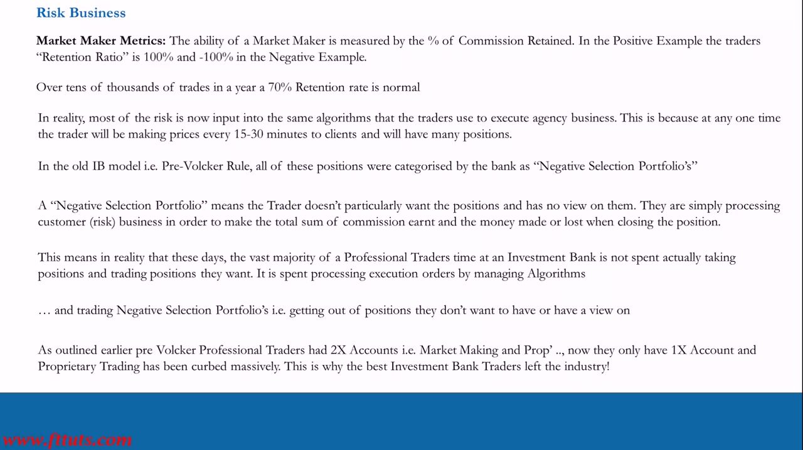
What retail traders learn from the IB trader
- Do NOT emulate the market-making function; it is irrelevant to a retail trader.
- DO emulate the PROPRIETARY TRADING function that pre-Volcker IB traders ran.
- Those prop accounts were huge and run as LONG/SHORT PORTFOLIOS with a 1-3 MONTH time horizon in a normal volatility environment; only in very volatile markets would they switch to much shorter-term trading (1 day, 1 week).
- Prop trading was where bonuses were paid (a cut of the prop book); agency and risk market making provided the cash flow that paid fixed costs and basic salaries.
Kreil worked at investment banks from 2000-2007, before the Volcker Rule reshaped the role. The prop model, not day trading, is the template.
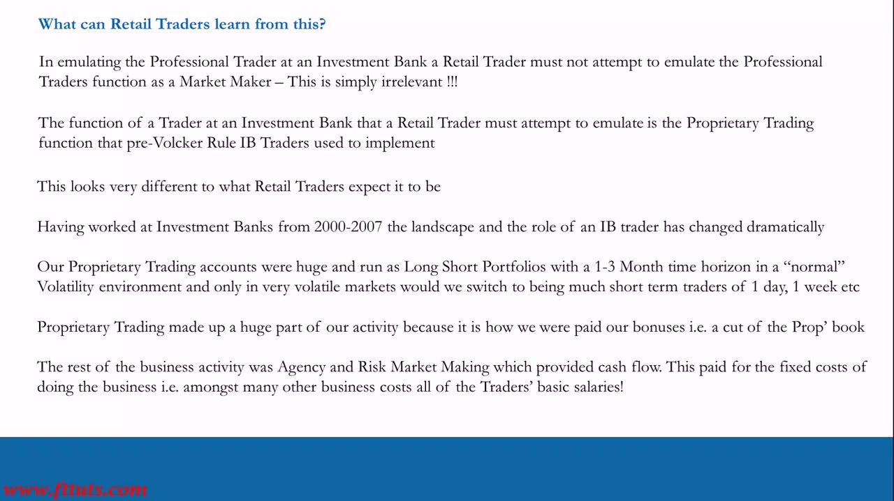
Trader compensation: the basic salary
- IB traders, both pre- and post-Volcker, have always received a Basic Salary.
- The basic salary and all infrastructure costs are covered by total commission earned plus money made or lost closing risk positions.
- Pre-Volcker, a trader who made no money (or lost money) on prop trading got no bonus but still received their basic salary.
The significance of the salaried base becomes clear later: professionals do not depend on any single period's trading P&L to survive, which shapes how they manage risk.
What a Hedge Fund PM actually does
- A Hedge Fund professional trader's function is to protect clients' (investors') capital by making money in both rising and falling markets.
- They are more accurately called Portfolio Managers (PMs) because they manage long/short portfolios in positions they WANT to have.
- Unlike an IB trader, there is no market-making activity.
- A hedge fund PM has essentially the same function as the pre-Volcker proprietary trading function of an IB trader.
Positions they want = positive selection, the opposite of the IB negative-selection portfolios.
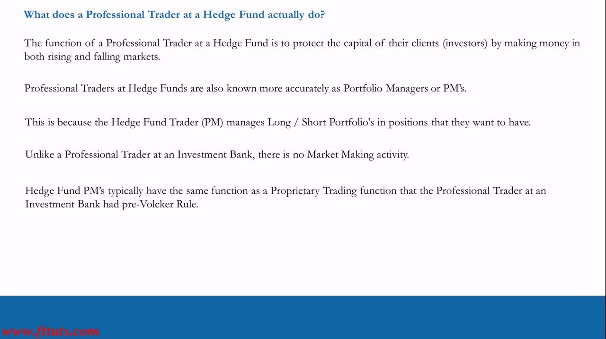
Hedge fund structure and fees
- IB traders use capital from public shareholders (banks are public companies); most hedge funds use capital from private investors (clients).
- They are called hedge funds because they typically run well-hedged (balanced), diverse long/short portfolios.
- Structure: an onshore Management Company plus an offshore entity holding client money, typically a Cayman entity with a Prime Brokerage Agreement with an investment bank.
- The Management Company charges an annual Management Fee (typically 1%-2%) on Assets Under Management (AUM), and the fund charges an annual Performance Fee on profits, typically 20%.
- Investors require the PM to invest in the fund and re-invest typically 50% of the performance fee earned in a year back into the fund.
- Hedge funds are more sophisticated than IB traders because they only have one function; their trade-idea and risk-management processes must be very refined or no one will invest.
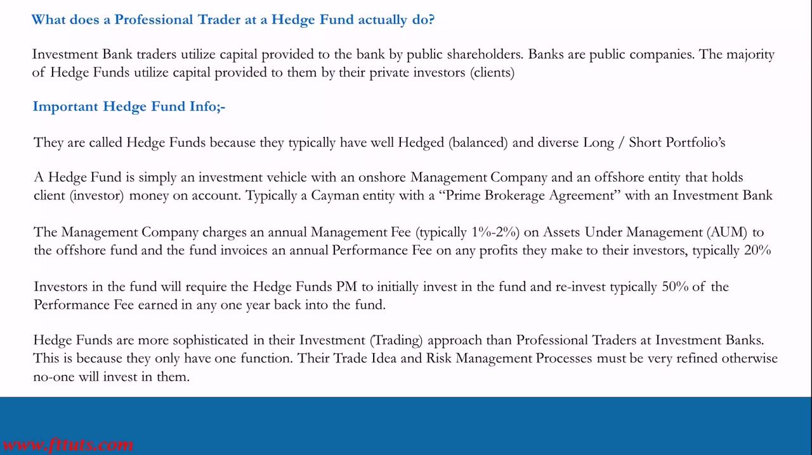
Simplified hedge fund example
- XYZ Fund has $1,000,000,000 of client money as AUM.
- They typically hold 30 positions long/short, e.g. 20 vs 10 (long bias) or 10 vs 20 (short bias).
- Self-imposed position limits: each of 30 positions could be 3.3% of AUM, or fewer positions with a limit such as 5% on one position.
- At 3.3% sizing, no single position can exceed $33.3mln notional value.
- Assume last year the fund returned 20% on a portfolio with 14% annualised volatility.
- Fees: 2% management fee + 20% performance fee = $20mln in fees + (20% of $200,000,000) = $40mln performance. 50% of the performance fee ($20mln) is re-invested in the fund.
- $40mln left the fund = ($20mln management + $20mln performance) minus infrastructure + basic salaries + bonuses.
- At the start of the next year, AUM = $1,000,000,000 + $160,000,000 = $1,160,000,000.
The worked numbers show how a winning fund grows AUM through reinvestment plus new investor money, and why the PM's incentive is capital preservation and steady growth.
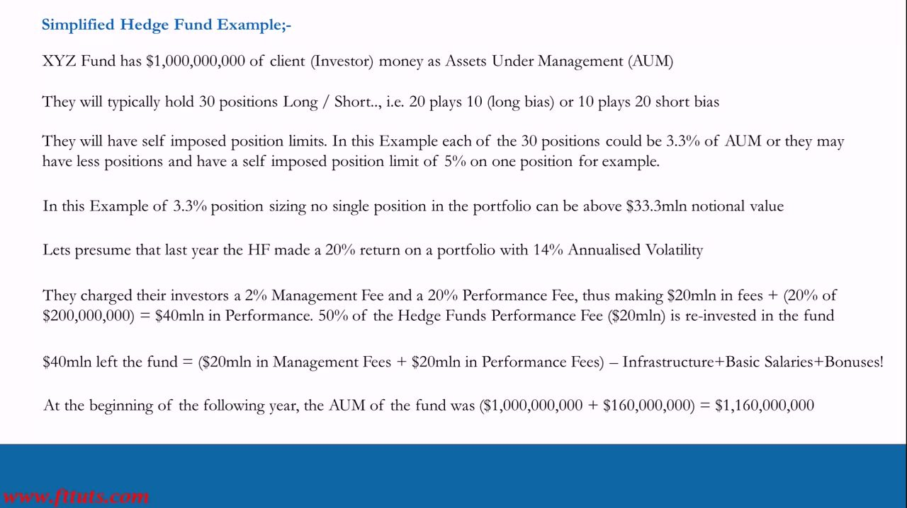
What this means for retail traders
- Hedge fund managers trade their own money plus outside investors' money, taking positions they want (positive selection). Post-Volcker IB traders do not trade their own capital; they run a commission business and trade out of positions they do not want (negative selection).
- Both hedge fund managers and pre-Volcker IB prop traders hold diverse long/short portfolios on a 1-3 month timeframe, aiming to make money in up and down markets (Absolute Return); many pre-Volcker IB traders became HF managers or now trade for themselves.
- Both hedge fund managers and pre- and post-Volcker IB traders get paid a basic salary regardless of performance; HF managers pay salaries from the annual management fee, designed to cover all infrastructure and running costs.
- Hedge fund managers invest in their own fund when winning and don't when losing (a losing fund earns no performance fee to re-invest).
- The job of a hedge fund manager, a pre-Volcker IB prop trader, and a retail trader is the same: make money trading whether the market goes up or down.
The retail trader uses their own money, so it is logical to emulate the successful professionals who also trade their own capital, i.e. the hedge fund PM and the pre-Volcker prop trader.
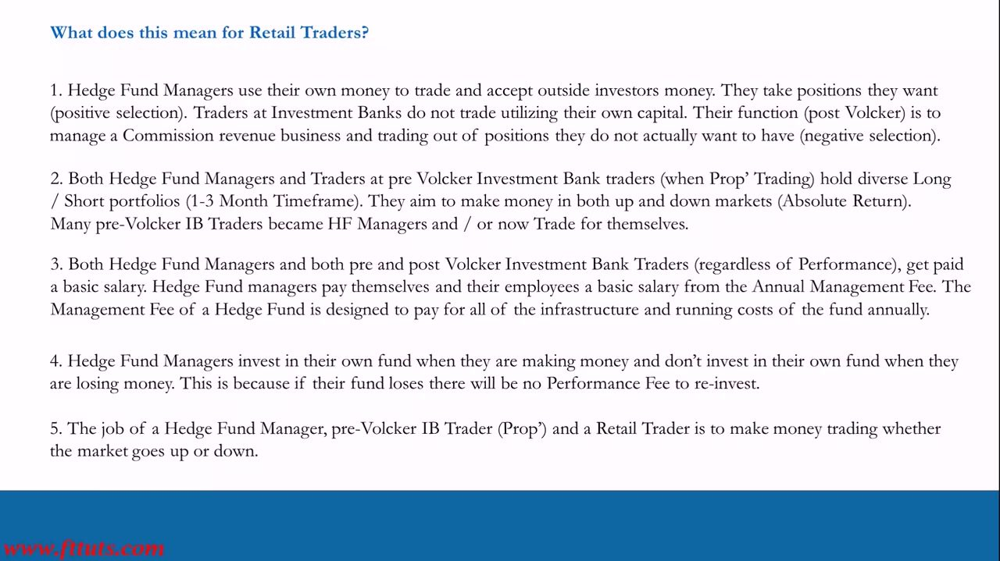
Professional vs retail: the differences
- Compare the HF Manager / pre-Volcker IB prop function against the typical retail trader profile.
- Approach: long/short portfolio, 1-3 months | directional day or short-term trading.
- Risk: diversity and risk management | concentrated risk.
- Return: long-term consistency | short-term binary or YOLO.
- Outcome: capital preservation / growth, grow the fund and collect higher fees and bigger bonuses | capital destruction, assets go to zero, try again next year.
- Misinformation and conflicts of interest (COI) in the retail industry mean most retail traders don't know these strategies, let alone how to implement them.
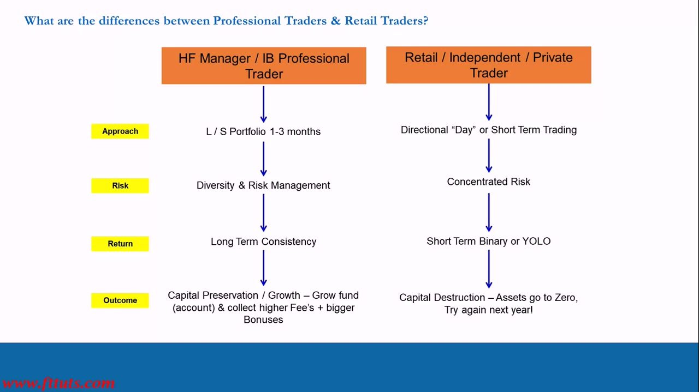
Professional vs retail: income and account growth
- Income: professionals draw basic salaries from commission / management fees | retail trade for extra income alongside full- or part-time employment.
- Growth behaviour: professionals add to the account when winning and reduce risk when losing | retail take income when winning and seek risk when losing.
- Result: professional AUM grows through reinvestment and increased outside investment | the retail account never grows and can only go to zero over time.
- Outcome: capital preservation / growth vs capital destruction.
The behavioural difference is decisive: adding risk when losing and skimming income when winning is exactly the pattern that guarantees a retail account trends to zero.
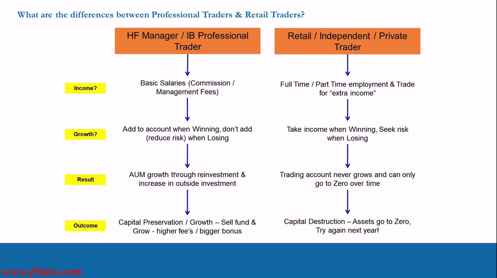
Where this course takes you
- Recap: provide a framework to emulate consistently profitable professionals, usable weekly and realistically within a normal life.
- Your first step, once you have admitted your wrongs, is to learn the theory; being here means you are well on your way.
- This video series plus PTM, POTM and PFTM can only get you to the door of Conscious Competence; you must step into Unconscious Competence yourself or get a boost from a Trader Mentoring Program.
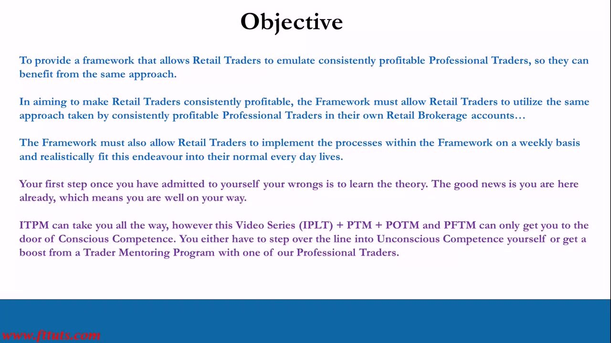
Glossary
- Professional TraderA full-time trader who works at either an Investment Bank or a Hedge Fund.
- Volcker RuleUS rule designed in 2010, compulsory in 2015, that curbed proprietary trading at banks, so IB traders unwound their prop books.
- Market MakingThe IB trader's core business, split into Agency Business (not on risk to the client) and Risk Business (on risk to the client).
- Agency BusinessRisk-free market making, executed by algorithm per the client's instructions; typically ~80% of all market-making business.
- CommissionFee charged on market-making business, typically ~3 bps (0.03%). Example: $10,000,000 x 0.0003 = $3,000.
- Retention Ratio% of commission retained, the measure of a market maker's ability; ~70% over a year is normal.
- Negative Selection PortfolioPositions a trader does not want and has no view on, held only to process customer risk business for commission.
- Proprietary TradingThe pre-Volcker IB function worth emulating: long/short portfolios on a 1-3 month horizon, where bonuses were earned as a cut of the prop book.
- Hedge Fund PMA Portfolio Manager who runs long/short portfolios in positions they want (positive selection), aiming to profit in rising and falling markets.
- AUMAssets Under Management, the client capital a fund manages; grows via reinvestment and new investor money when the fund wins.
- Management FeeAnnual fee on AUM, typically 1%-2%, that funds infrastructure and basic salaries regardless of performance.
- Performance FeeAnnual fee on profits, typically 20%; the PM re-invests typically 50% of it back into the fund.
- Absolute ReturnMaking money whether markets rise or fall, the shared goal of hedge fund PMs, pre-Volcker prop traders and retail traders.
- Competency HierarchyThe four learning stages from Unconscious Incompetence (retail) up to Unconscious Competence (professional), climbed via Education and Implementation.